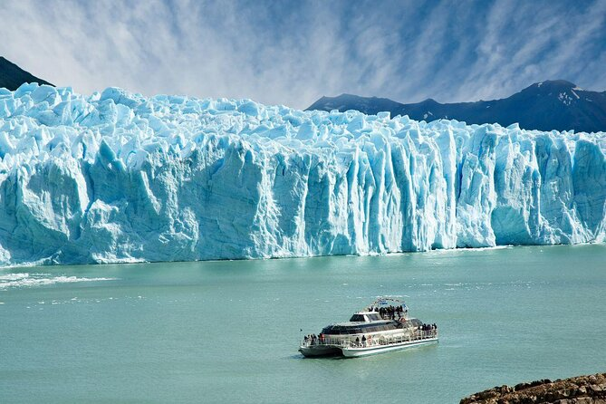
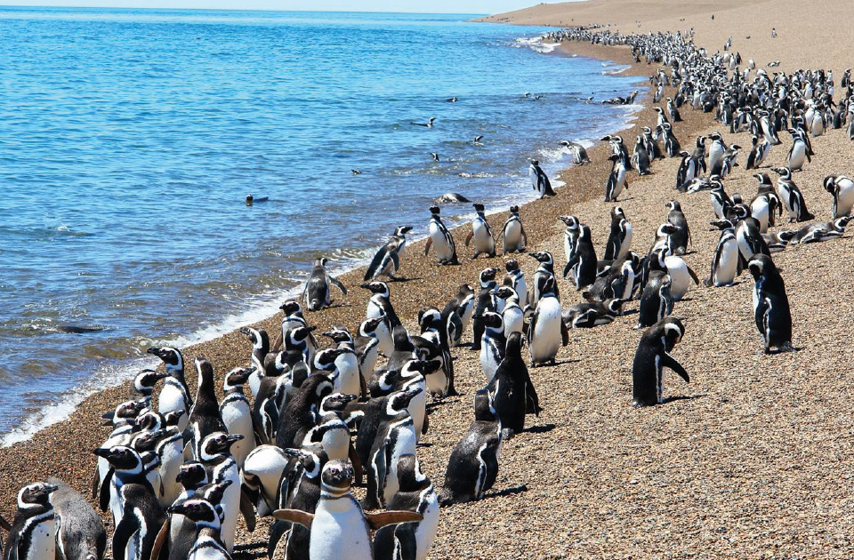

Glaciar Perito Moreno
El glaciar Perito Moreno, ubicado en Santa Cruz, Argentina, es parte del parque nacional Los Glaciares. Con un frente de 5 km y una altura de 60 m, es famoso por su impresionante colapso de hielo y belleza natural.
Purmamarca
En Jujuy, Argentina, se encuentra un encantador pueblo famoso por el Cerro de los Siete Colores. Su economía se impulsa gracias al turismo, especialmente tras la declaración de la Quebrada de Humahuaca como Patrimonio de la Humanidad.
La Boca
La Boca, un barrio de Buenos Aires, Argentina, se ubica en la desembocadura del Riachuelo. Famoso por el club Boca Juniors y su colorido paisaje, recibió inmigrantes italianos en el siglo XIX, formando una comunidad única con conventillos y una rica historia ligada al puerto y al arte.
Cataratas del Iguazú
Ubicadas en la frontera entre Argentina y Brasil, cuentan con 275 saltos, de los cuales el 80% se encuentran en Argentina. Forman parte del Parque Nacional Iguazú, declarado Patrimonio de la Humanidad, y son famosas por la impresionante Garganta del Diablo y su gran biodiversidad.
San Carlos de Bariloche
Es una ciudad ubicada en la Patagonia argentina, en la provincia de Río Negro. Fundada en 1902, se ha convertido en un importante destino turístico, famoso por sus paisajes naturales, lagos y montañas. Atrae a cerca de un millón de turistas anuales, especialmente en invierno para esquiar.
Península Valdés
Ubicada en Chubut, Argentina, es un Patrimonio de la Humanidad de la UNESCO, famosa por el avistamiento de ballenas francas australes. Además, es hogar de pingüinos de Magallanes, que anidan en colonias a lo largo de su costa. La región también atrae a turistas e investigadores.